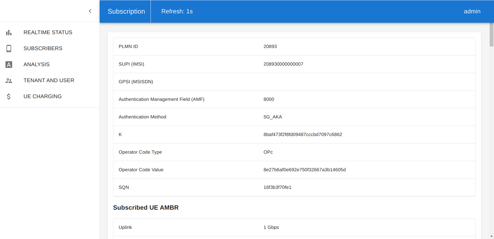
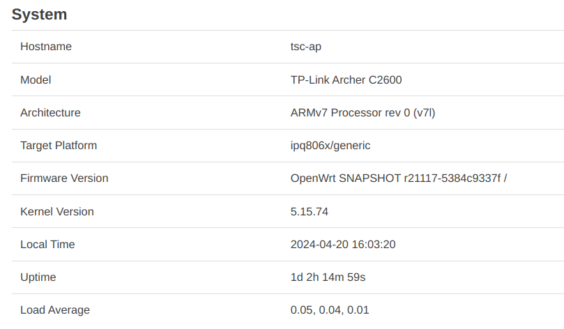
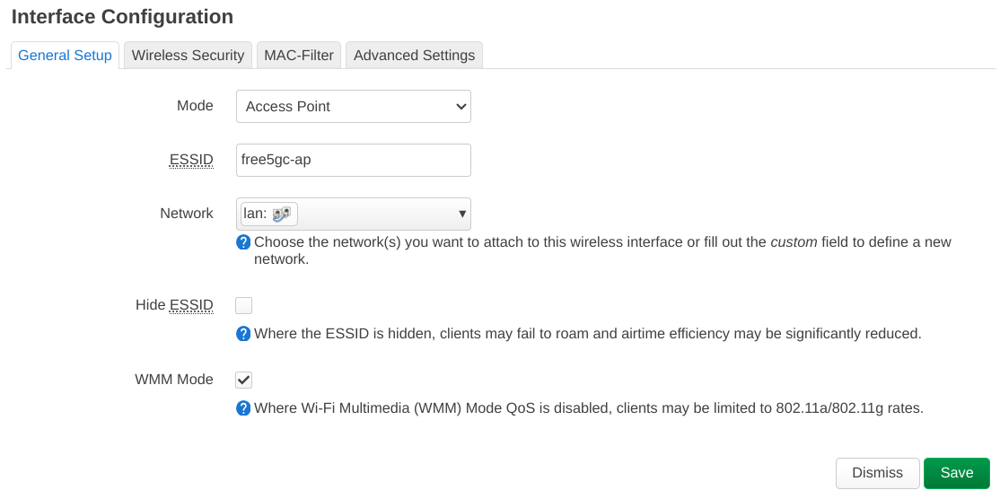
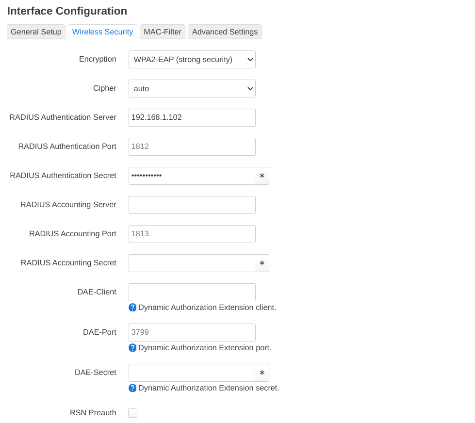
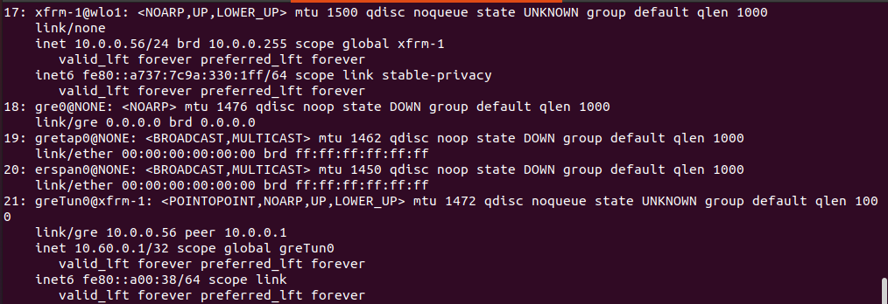
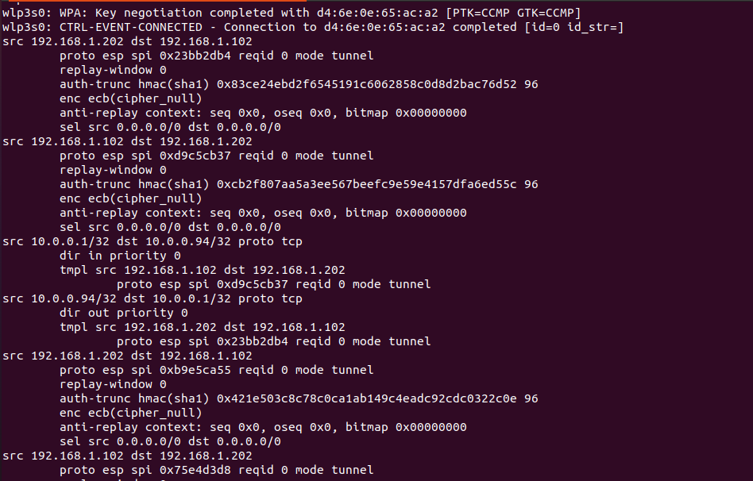
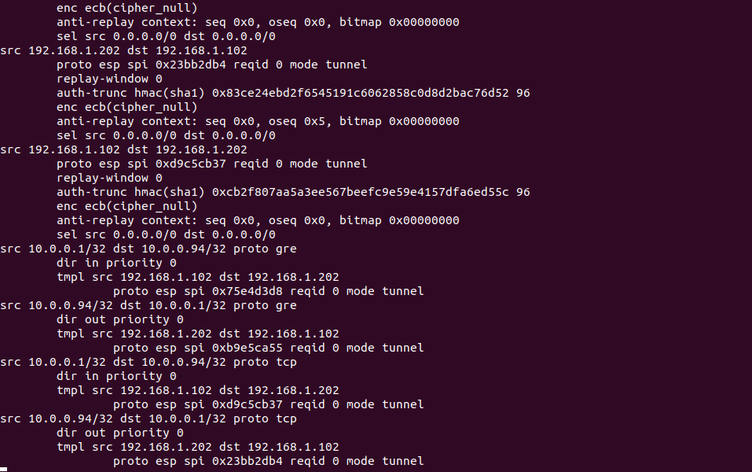
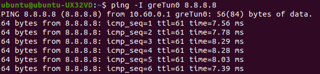

Tngfue installation
1. free5GC installation
(Optional) If you install free5GC on a VM, add a network adapter set to bridged mode, and set the card name to your AP. Some additional information on how to configure multiple network interfaces on the VM are available on the docs and on Ubuntu docs page.
Follow the tutorial in free5GC official site:
Configuration for NFs
Modify ~/free5gc/config/tngfcfg.yaml file
# --- Bind Interfaces ---
IKEBindAddress: <YOUR_FREE5GC_IP> # IP address of Nwu interface (IKE) on this TNGF
RadiusBindAddress: <YOUR_FREE5GC_IP> # IP address of Nwu interface (IKE) on this TNGF
2. Use WebConsole to Add UE
- Start your webconsole server
cd ~/free5gc/webconsole/ make # If webconsole was not previously compiled ./bin/webconsole - Open your web browser from your host machine, and enter the URL
http://<FREE5GC_IP>:5000 - On the login page, enter username
adminand passwordfree5gc - Go to
SUBSCRIBERSand click onCREATE - Check that the
SUPI (IMSI)field is unique and modify other fields as necessary to ensure data consistency with sec.conf file
 - Then, scroll the page all the way down and click on
CREATE.
3. Access Point Setup
Follow Section 3.1 to set up an Access Point using OpenWRT firmware or, alternatively, Section 3.2 to build an AP on Ubuntu 22.04 using the hostapd daemon.
3.1 OpenWRT
Note: The steps of this section were tested using OpenWrt as AP firmware (see screenshot below)
AP information

Configuring Wi-Fi Network ESSID
Network → Wireless → Edit → Interface Configuration → General Setup

Configuring Wi-Fi Network Security
Interface Configuration → Wireless Security

Note: RADIUS Authentication Server is free5GC's IP. RADIUS Authentication Secret must match the one from RadiusSecret parameter on tngfcfg.yaml file
Tip: If WPA2-EAP isn't available on the OpenWrt firmware installed, check this troubleshooting section.
3.2 Hostapd (CLI)
Note: This section explains how to use hostapd to set up an access point. Hostapd is an open-source daemon that can be used on Linux systems (like Ubuntu) to build a DIY alternative to OpenWRT.
To install hostapd on Ubuntu 22.04 (it requires a Wi-Fi interface available):
sudo apt install hostapd
Write a new config file for hostapd:
sudo nano /etc/hostapd/hostapd.conf
Paste the following content into it:
interface=wlan0
driver=nl80211
ssid=free5gc-ap
hw_mode=g
channel=6
ieee8021x=1
auth_algs=1
wpa=2
wpa_key_mgmt=WPA-EAP
rsn_pairwise=CCMP
# RADIUS config
auth_server_addr=192.168.1.102
auth_server_port=1812
auth_server_shared_secret=free5gctngf
nas_identifier=myhostapd
Note 1: Ensure that
auth_server_addr and auth_server_shared_secret must match RadiusBindAddress and RadiusSecret parameters on tngfcfg.yaml file.
Note 2: Ensure that interface matches the name of the WiFi interface of your device.
Start the hostapd service:
sudo systemctl unmask hostapd
sudo systemctl enable --now hostapd
4. TNGFUE Installation
Install TNGFUE in another device with a Wi-Fi interface available
Get Source Code
git clone https://github.com/free5gc/tngfue.git
cd tngfue
TNGFUE Configuration
A. Automated Setup
Use the prepare script:
(Optional) Open the script and adjust it with the desired parameters/vars
nano prepare.sh
Note: Confirm the Wi-Fi interface name (i.e. IFACE_NAME) is the same as the OS name
Run the script to begin building TNGFUE
./prepare.sh
B. Advanced Manual Setup
(Alternatively) To configure and build manually:
Note: The prepare script executed the steps below, you may skip to the next section
Build/Compile Configuration
Make sure the flag CONFIG_EAP_VENDOR_TEST of the .config file inside wpa_supplicant folder is enabled as shown below:
...
CONFIG_EAP_VENDOR_TEST=y
...
Tip: This setting is already enabled
TNGFUE Settings
Modify ~/tngfue/wpa_supplicant.conf
ssid:your ap/wifi name
(same as the AP setting part)identity:identity information for this ue
(set whatever you want)password:wifi/ap password
(same as the AP setting part)
ctrl_interface=udp
update_config=1
network={
ssid="<YOUR_AP_NAME>"
key_mgmt=WPA-EAP
eap=VENDOR-TEST IKEV2
identity="<YOUR_IDENTITY_INFO>"
password="<YOUR_PASSWORD>"
}
E.g.
ctrl_interface=udp
update_config=1
network={
ssid="free5gc-ap"
key_mgmt=WPA-EAP
eap=VENDOR-TEST IKEV2
identity="tngfue"
password="free5gctngf"
}
Security Parameters
In tngfue/wpa_supplicant/sec.conf:
wifiifname:your wifi interface name
(you can find this by typingifconfigin terminal)
You can find all the parameters listed below on the Web Console subscriber page.
imsi_identity:SUPI(IMSI)MSIN:SUPI without the PLMN part
Format:
wifiifname: <YOUR_WIFI_INTERFACE_NAME>
K:<UE_K_IN_WEBCONSOLE>
imsi_identity:<UE_SUPI_IN_WEBCONSOLE>
nai_username:type0.rid61695.schid0.userid<MSIN>
SQN:<UE_SQN_IN_WEBCONSOLE>
AMF:<AMF_IN_WEBCONSOLE>
OPC:<UE_OPCV_IN_WEBCONSOLE>
E.g.
wifiifname:wlp3s0
K:8baf473f2f8fd09487cccbd7097c6862
imsi_identity:208930000000007
nai_username:type0.rid61695.schid0.userid000000000007
SQN:16f3b3f70fe1
AMF:8000
OPC:8e27b6af0e692e750f32667a3b14605d
Build binary
cd ~/tngfue/wpa_supplicant/
make
For more information, see this troubleshooting section
5. Testing
A. Run free5GC with TNGF
On free5GC's machine:
cd ~/free5gc
./run.sh -tngf
B. Run TNGFUE
On TNGFUE's machine:
Run using the run script
./run.sh
Then skip to the next section
(Alternatively) Run manually
Make sure xfrm and greTun0 does not exist
If you have not successfully connected to TNGF yet, you can skip this step
Delete both interfaces using:
sudo ip l del greTun0
sudo ip l del xfrm-1
Set Wi-Fi interface IP to the same LAN as free5GC
ip a add 192.168.1.202/24 brd 192.168.1.255 dev <YOUR_WIFI_INTERFACE_NAME>
ip r add default via 192.168.1.202 dev <YOUR_WIFI_INTERFACE_NAME>
Run
cd ~/tngfue/wpa_supplicant
sudo ./wpa_supplicant -c ../wpa_supplicant.conf -i <YOUR_WIFI_INTERFACE_NAME>
Example output
When the session successfully connects, it will be possible to see these five interfaces established.

And TNGFUE will show that connection is completed.


C. Transfer data over the greTun0 interface
ping -I greTun0 8.8.8.8
